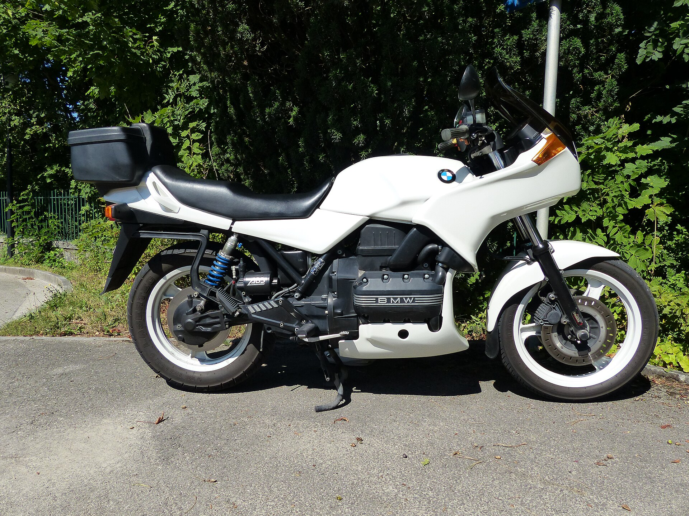

TU GARAJE / 01
BMW K75 S
FLYING BRICK · EUROPA · 1987
3 cilindros · refrigeración líquida · ~740 cm³
Datos iniciales aportados por el usuario
ESTADO / 02
Estado de la moto
GASTOS / 03
Gastos del año
ACCESO RÁPIDO / 04
Tu libro de servicio
Proyecto personal independiente, no afiliado a BMW AG. Verifica los datos técnicos con documentación aplicable a tu versión. Desarrollada por Sr. Balloneta.
Foto de referencia: BMW K75S de 1991, fotografía de Marc Mongenet, Wikimedia Commons, CC BY-SA 4.0. No representa la unidad del usuario.
LIBRO DE SERVICIO / 05
Libro de servicio
Registra trabajos realizados; los datos se guardan en este dispositivo.
HISTORIAL / 06
Historial
PLANIFICADOR / 07
Recordatorios
Programa avisos por fecha o kilometraje.
Plan orientativo · fuente secundariaLa agenda facilitada enumera BMW K75, K100, K1100 y K1, pero no confirma mercado ni variante. El plan usa sus intervalos genéricos y parte del kilometraje exacto actual; contrasta la aplicabilidad y el último mantenimiento antes de usarlo.
AVISOS / 08
Próximas operaciones
Un aviso vence al alcanzar la fecha o el kilometraje, lo que ocurra primero. El kilometraje actual no indicado no se estima.
DATOS DE TALLER / 09
Biblioteca técnica
Esta pantalla muestra una ficha para la moto activa del garaje, con fuentes y aplicabilidad visibles.
Estado de las fuentesLas fuentes secundarias discrepan en algunos intervalos y no confirman la aplicabilidad exacta. Las capacidades y especificaciones BMW siguen pendientes.
Fuentes y manuales
BMW Motorrad es la fuente principal. Los catálogos externos son referencias secundarias y no sustituyen la documentación de taller.
Consultar manuales BMW Motorrad ↗ Catálogo de piezas RealOEM · fuente secundaria ↗ Homenaje a la serie K · imágenes y documentación en Wikimedia Commons ↗Los PDF facilitados por el usuario se incluyen con autorización para publicarlos en esta aplicación y se abren en su idioma original. La disponibilidad sin conexión depende de que el navegador haya guardado el archivo completo.
FICHA DEL GARAJE / 10
Ficha de la moto
Datos personales guardados localmente en este dispositivo.
Foto de la moto
La foto de referencia no representa tu unidad. Tu foto se reduce y guarda solo en este dispositivo.
Tus datos
Historial, recordatorios y ficha permanecen en el almacenamiento local del navegador. No hay cuentas ni sincronización.
Idioma de la interfaz
El idioma afecta la interfaz; no traduce los datos personales ni las fuentes técnicas originales.